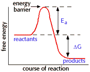

Energy, Enzymes, and Catalysis Problem Set
Problem 4 Tutorial: An energy barrier separating reactions and products in a chemical reaction.
To overcome an energy barrier between reactants and products, energy must be provided to get the reaction started. This energy, which is recovered as the reaction proceeds, is called:
Activation energy
| There is an energy barrier that separates the energy levels of the reactants and products. Energy must be added to the reactants to overcome the energy barrier, which is recovered when products are formed. The energy barrier is known as Ea, the activation energy. The activation energy is distinct from the ΔG, or free energy difference between the reactants and products. |  |


Department of Biochemistry and Molecular Biophysics
University of Arizona
Revised: October 2004
Contact the Development Team
http://biology.arizona.edu
All contents copyright © 1996. All rights reserved.